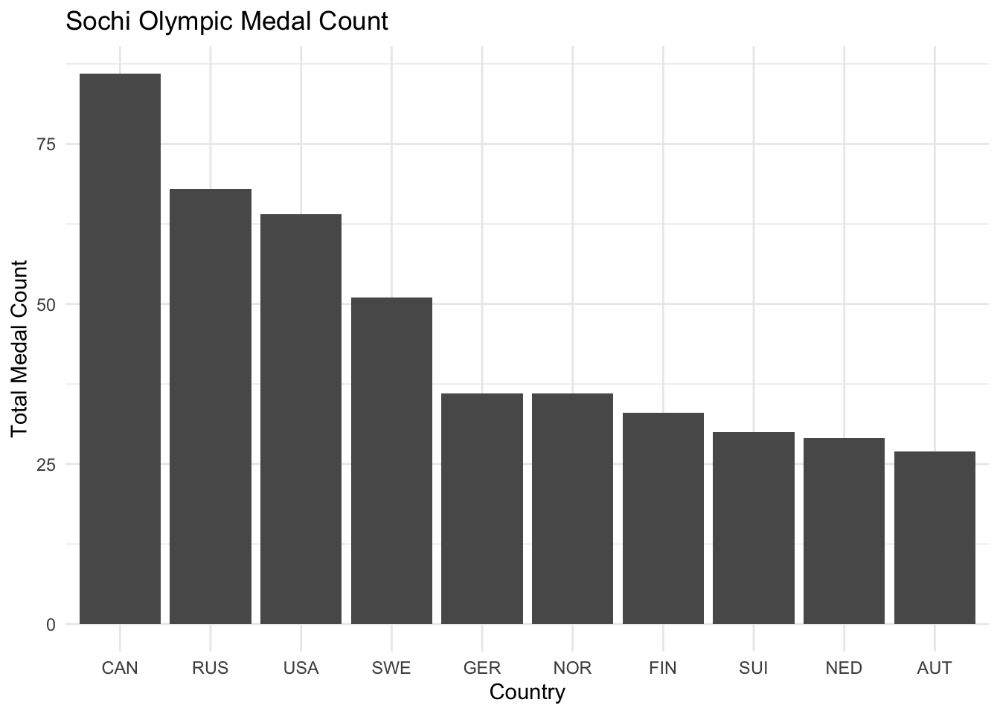
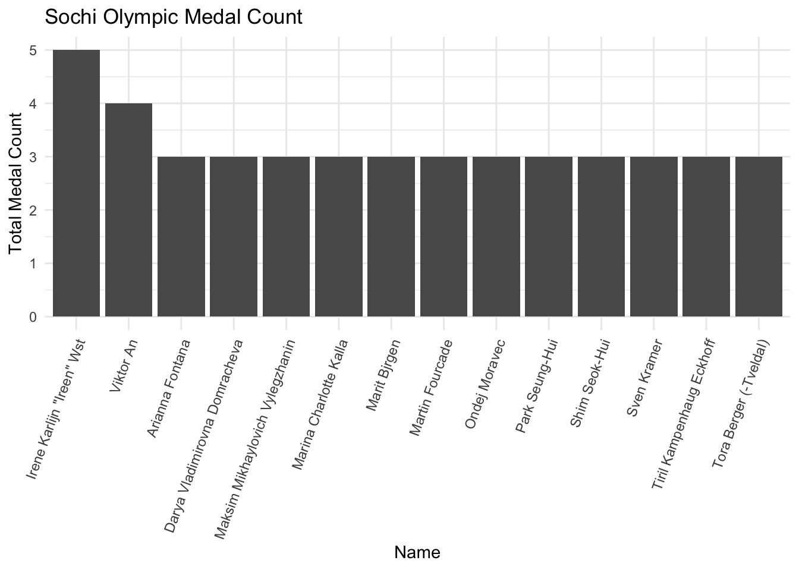
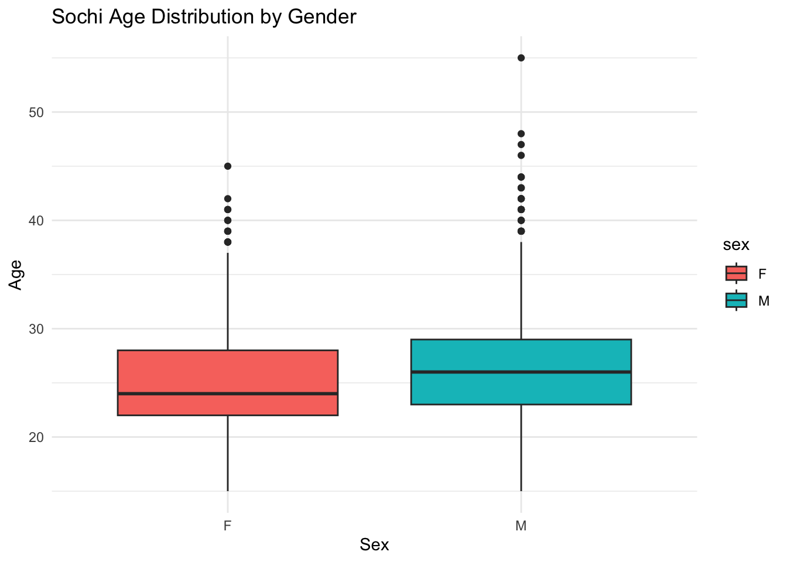
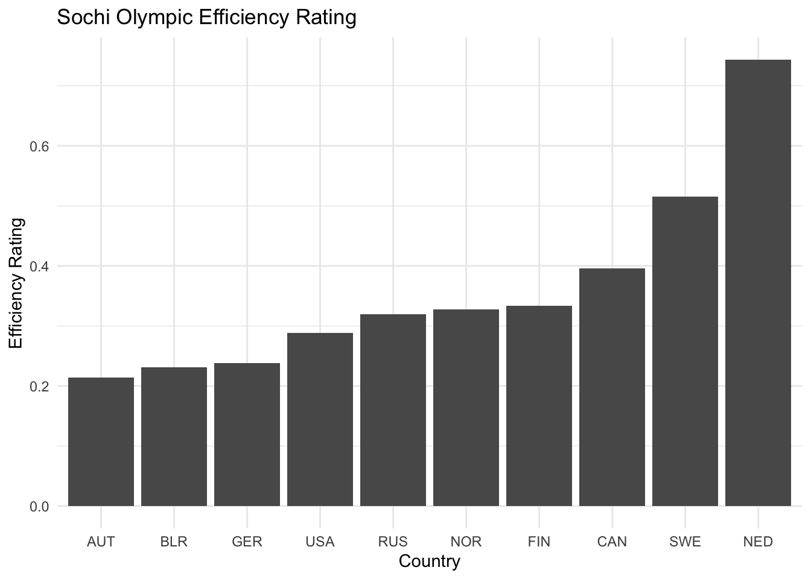
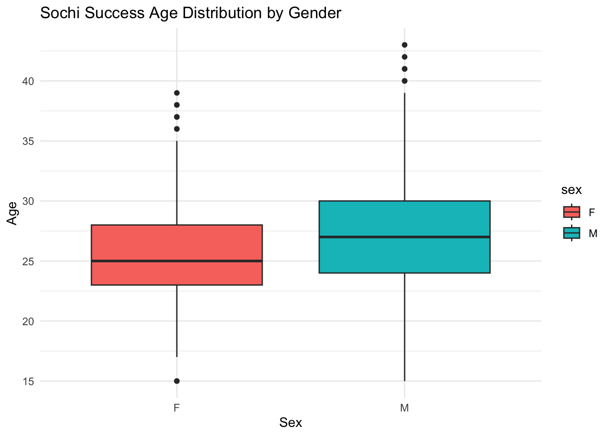
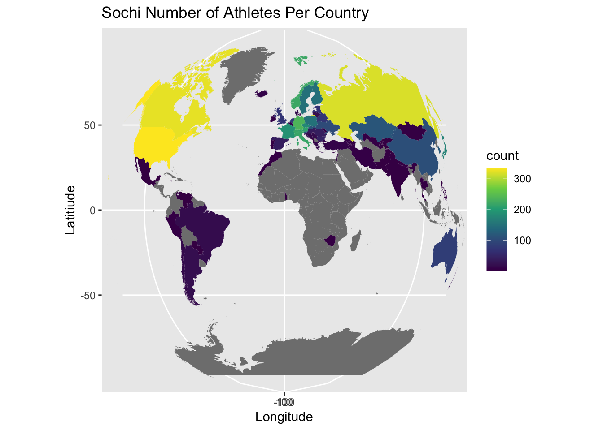

library(dplyr)
library(ggplot2)
olympics <- readr::read_csv('https://raw.githubusercontent.com/rfordatascience/tidytuesday/main/data/2024/2024-08-06/olympics.csv')
sochi_olympics <- olympics |> filter(city == "Sochi")Introduction:
- In honor of the 2026 Milan and Cortina olympic games I am going to dive back into the results from the 2014 Sochi Winter games. The following imported data set is all 120 years of olympics however I have filtered it to only include results from the 2014 Olympic games. From this we can see which athletes and countries were successful as well as the the distribution of athletes age, nationality, efficiency rating, etc.
Question 1
- What which country was the most successful in this olympic games?
sochi_success <- sochi_olympics |> filter(!is.na(medal))|> group_by(noc, medal) |> summarise(count = n())
sochi_success <- sochi_success |> group_by(noc) |> mutate(total_medals = sum(count)) |> arrange(desc(total_medals)) |> filter(total_medals >= 20) |> filter(medal == "Gold")ggplot(data = sochi_success, aes(x = reorder(noc, -total_medals), y = total_medals)) + geom_col() +
theme_minimal() + labs(
title = "Sochi Olympic Medal Count",
x = "Country",
y = "Total Medal Count"
)
- As we can see from the graph above Canada received the most almost doubling the 5th ranked country Germany.
Question 2
- Who was the most successful athlete in the Sochi olympics?
sochi_athlete <- sochi_olympics |> filter(!is.na(medal)) |> group_by(name) |> summarise(total_medals = n()) |> filter(total_medals >= 3)
ggplot(data = sochi_athlete, aes(x = reorder(name, -total_medals), y = total_medals)) + geom_col() +
theme_minimal() + labs(
title = "Sochi Olympic Medal Count",
x = "Name",
y = "Total Medal Count"
) + theme(
axis.text.x = element_text(angle = 70, hjust = 1)
)
- As we can see from the plot above Irene Wst took home a grand total of 5 medals during the the Sochi Olympics! While over 14 athletes took home 3 or more medals.
Question 3
What is the age distribution of athletes in the Sochi games?
sochi_age <- sochi_olympics |> group_by(name) |> slice(1)
ggplot(data = sochi_age, aes(x = sex, y = age, fill = sex)) + geom_boxplot() + labs(title = "Sochi Age Distribution by Gender",
x = "Sex",
y = "Age") +
theme_minimal()
- It is interesting to see the mean age difference between female sex and male sex, as males on average tend to be older than females. It is really interesting to see the outliers especially looking at Hubertus Rudolph von Frstenberg-von Hohenlohe-Langenburg, an apline skier who competed at 55 years old!
Question 4
How is efficient is each country at the Olympic games, i.e. what is their ratio of athletes sent versus medals won?
sochi_efficiency <- sochi_olympics |>
group_by(noc) |>
summarise(
n_athletes = n_distinct(id),
n_medals = sum(!is.na(medal))
) |>
filter(n_athletes >= 5) |>
mutate(efficiency = n_medals / n_athletes) |> arrange(desc(efficiency)) |> slice(1:10)
ggplot(data = sochi_efficiency, aes(x = reorder(noc, efficiency), y = efficiency)) + geom_col() +
theme_minimal() + labs(
title = "Sochi Olympic Efficiency Rating",
x = "Country",
y = "Efficiency Rating"
) 
- Here we can see how efficient each country is with their athletes. Yes Canada did win most medals but if you look at their efficiency rating you can see they are 3rd. It makes sense how the Scandinavian countries have a high rating as they tend to have alot of success during the winter games.
- AI was used in this code chunk in understand the function of the distance() function and how to used it properly to get a unique list of athletes.
Question 5
What is the age distribution of successful athletes (won a medal) during the olympic games?
sochi_age_suc <- sochi_olympics |> filter(!is.na(medal)) |> group_by(name) |> slice(1)
ggplot(data = sochi_age_suc, aes(x = sex, y = age, fill = sex)) + geom_boxplot() + labs(title = "Sochi Success Age Distribution by Gender",
x = "Sex",
y = "Age") +
theme_minimal()
Here we see the mean age increase by about 2-3 years for each gender in terms of winning a medal or not, showing the experience can help lead to success. Again it is really cool to see the outliers of the age distribution seeing 43 year old Teemu Ilmari Selnne winning a medal at age 43 and then Alina Mller winning a medal at an age of 15!
Question 6
What is the distribution of athletes sent by country?
sochi_success2 <- sochi_olympics |> group_by(team) |> summarise(count = n()) |> mutate(team = if_else(team == "United States",
true = "USA",
false = team)) |> mutate(team = if_else(team == "Great Britain",
true = "UK",
false = team))
world_map <- map_data("world")
world_joined <-left_join(world_map,sochi_success2 , join_by(region == team))
ggplot(data = world_joined, aes(x = long, y = lat, group = group)) +
geom_polygon(aes(fill = count)) + coord_map(projection = "gilbert") +
scale_fill_viridis_c() +
xlim(c(-180, 180)) + labs(title = "Sochi Number of Athletes Per Country",
x = "Longitude",
y = "Latitiude")
When it comes to the Winter Olympics, the more developed a country is the more athletes they send. Looking at the United States, Canada and then majority of Europe, they tend to send 200+ athletes where the global south sends a very small amount, of if any.
Conclusion
- To represent the data in the best way possible I used a combination of parts from our “Grammar of Graphics” section such as geom_col() and geom_boxplot() to accurately represent the data. The boxplot is a a much better way to represent the data as it shows the spread rather that just a mean. This allows use to look at the outlier’s such at the 55 and 15 year old medalist.
Some flaws in my approach that could be fixed with either more time more information is determining whether or not total medal count includes team sports or not. I included team sports in medal count therefore Canada, who won the hockey tournament appeared to have the most medals. However, if you were to only count hockey as one medal then Russia and the USA would have more medals than Canada. Additionally, when I joined the Olympic data set to the world map, I had to rename both US and Great Britain so they would join correctly. I was able to catch this mistake as from back ground knowledge I know they always send a lot of athletes however both came up gray when I first ran it. If I were able to have more time I could filter through the data to ensure that no names were missed. This flaw has potential to underrespresent some countries on the map.
No matching items